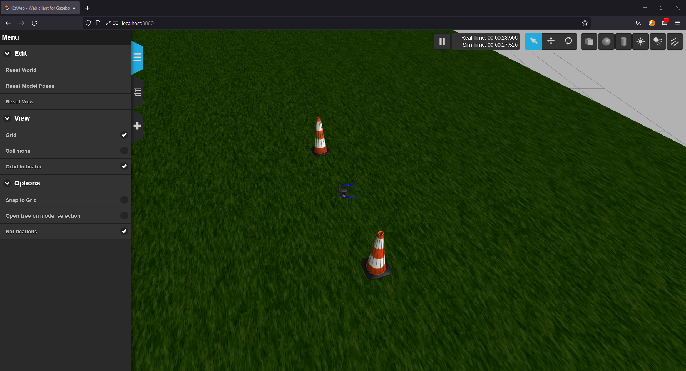

3. Running the Example Fenswood Scenario¶
This year, the group project revolves around the flight of a single UAV to a 'volcano' at Fenswood Farm. Therefore we have provided this fenswood scenario to all students.
The fenswood scenario repository is here: https://github.com/StarlingUAS/FenswoodScenario
This section takes you through step by step as to how to download and run the example, and a bit of information as to what the example contains. This information is also in the example repository README.
3.1 Getting the Example Scenario¶
The example is packaged as github repository. For information on what is github see this article.
In order to run the example scenario, you will first need to 'clone' the repository locally. Therefore, navigate to a location in the file system where you want to store the repository (e.g. cd ~/Documents) and run the following:
git clone https://github.com/StarlingUAS/FenswoodScenario.git
Note: this is why we needed to install
gitearlier usingapt
This will download the repository folder into your local directory. Navigate into the folder using cd:
myuser@my-machine:~/Documents$ cd FenswoodScenario
myuser@my-machine:~/Documents/FenswoodScenario$ ls
Dockerfile README.md docker-compose.example_drone_controller.yaml docs fenswood mkdocs.yml
Makefile docker-bake.hcl docker-compose.yml example_controller_python_ap foxglove_layout.json simulation
Then you will need to download the associated starling containers to run the simulator and SITL. Thankfully, this is fairly straightforward and can be run by doing the following:
myuser@my-machine:~/Documents/FenswoodScenario$ docker-compose -f docker-compose.yml pull
Pulling simhost ... done
Pulling sitl ...
Pulling mavros ...
Pulling rosbridge-suite ...
Pulling ui
Breaking down this command,
docker-composeis a utility which allows us to compose together multiple docker containers, i.e. run multiple containers together.-f docker-compose.ymlspecifies thatdocker-composeshould read the configuration yaml file given by-f.docker-compose.ymlis a configuration file we have written which specifies the containers and configurations required to run the fenswood scenario. In this file, we have speciifed that 6 containers will be run.pullspecifies that we would like to download the required containers locally, but not run them just yet.
Note: if the file is called
docker-compose.ymlordocker-compose.yamlthe-foption does not need to be specified, we are doing it here for completeness. Try it:docker-compose pull
This command may take between 10 minutes as it has to download some large content - the simulator itself is around 5Gb! It is recommended you keep reading and have a look at section 5.4 (a brief introduction to ROS) while waiting.
The downloaded containers are not stored in your local directory, instead they are stored by docker in a local library on your own machine. All downloaded and local containers can be seen by typing.
myuser@my-machine:~/Documents/FenswoodScenario$ docker images
3.2 Running the Example Scenario¶
Once the download of pull has completed, you can run the scenario. To run the example scenario, it is a similar command except now you ask it to up:
The simulator is build locally, so this may take a few minutes too to download dependencies and such.
myuser@my-machine:~/Documents/FenswoodScenario$ docker-compose up
This will start 4 containers:
- simhost: The physics simulator instance which also hosts the simulated drone model and the target spawning.
- sitl: The software in the loop representing the onboard autopilot software.
- mavros: This is the bridge between Mavlink and ROS. It also serves to send mavlink messages to a ground station.
- rosbridge-suite: This is a ros-web interface that is placed there for future use.
- ui: This is the example ui.
Wait a minute or so for all of the containers to initialise. Once started, the simulator should be available to see in the browser.
- Open up the firefox browser (click on firefox on the sidebar, or press Win and search for firefox)
- Go to localhost:8080
- You should see something like the following

The web interface is known as Gazebo Web. You can fly your camera through the environment like many other 3D modelling software:
- Left Click on a location and drag does Panning/Translating
- Middle Click on a location and drag does rotating around a point
- Scrolling the Middle Mouse button will zoom you in and out.

The full process as a gif:

To stop the simulator from running, select this terminal and press Ctrl+c. Pressing once will shutdown the containers gracefully. Pressing twice will attempt to immediately kill all contianers.